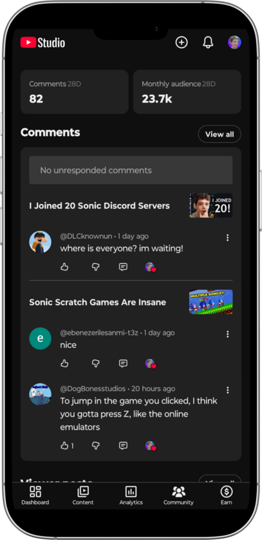
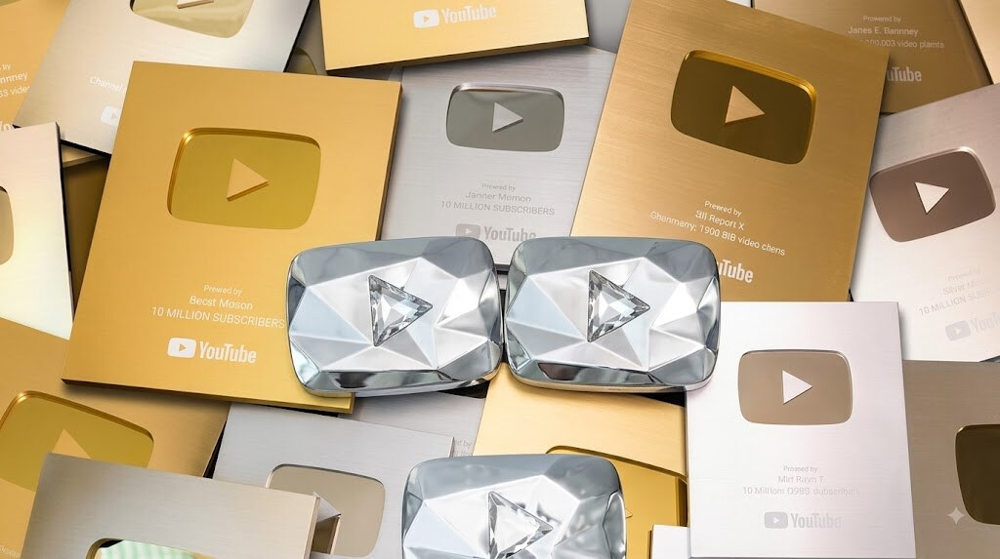

Sua imagem e voz agora estão protegidas contra IA no YouTube
VOZ + ROSTO · VERIFICANDO
Conheça a ferramenta oficial do YouTube Studio para identificar e derrubar clones digitais, golpes com deepfake e uso não autorizado da sua imagem.
O risco dos golpes digitais
Por que essa atualização muda o jogo para quem produz conteúdo?
Golpes com IA para clonar rosto e voz de influenciadores e jornalistas explodiram. Criminosos usavam a credibilidade de canais para aplicar fraudes financeiras na audiência. Agora o YouTube assume o controle direto dessa verificação.
Ações no 1º tri de 2026
1,2Mi+
1,2Mi+
1,2Mi+
Vídeos derrubados no Brasil
por violar diretrizes de desinformação, assédio e fraude.
Com a nova tecnologia, a verificação deixa de ser genérica e passa a proteger a identidade individual de cada criador e figura pública.
Como funciona no YouTube Studio

1
Registro de biometria
Você envia docs e fotos no YouTube Studio para criar seu molde digital.
2
Varredura por IA
O algoritmo do Google escaneia uploads em tempo real, comparando rosto e voz.
3
Alerta & derrubada
Detectou uso indevido? Você é avisado na hora e pode derrubar o vídeo.
Por que a ferramenta chegou agora?
Pedido urgente do TSE
Expansão rápida do sistema para o período eleitoral brasileiro.
Candidaturas femininas
Suporte prioritário: são o maior alvo de deepfakes tóxicos.
Processo eleitoral
Evita vídeos fakes de candidatos anunciando propostas falsas.
Proteção à imprensa
Jornalistas do Grupo Bandeirantes já foram cadastrados.
Blindagem do canal
Resguardo direto da marca do veículo de comunicação.
O que você, creator, deve fazer hoje
Acesse o YouTube Studio
Verifique a aba de Direitos Autorais e Detecção de Conteúdo para conferir a liberação da ferramenta no seu canal.
Mantenha seus dados atualizados
Faça a verificação oficial para o algoritmo reconhecer a sua titularidade e a da sua equipe.
Avise sua comunidade
Oriente os inscritos a confiar só nos vídeos do canal oficial e a denunciar perfis clones.

Proteja seu canal e escale sua presença no YouTube
Nossa equipe acompanha de perto todas as novidades e atualizações do algoritmo do YouTube para manter sua marca digital segura, profissional e em constante crescimento.